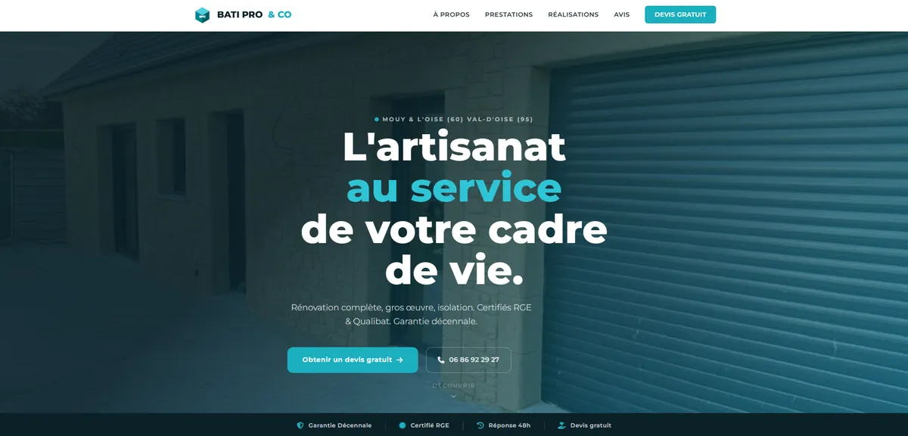
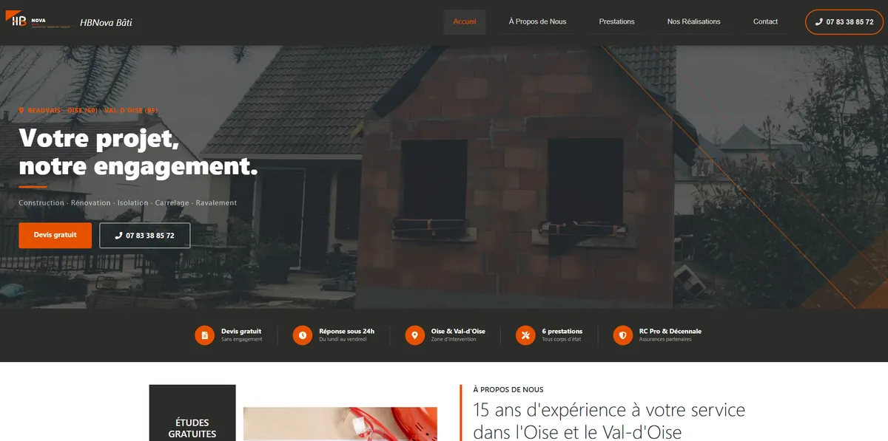
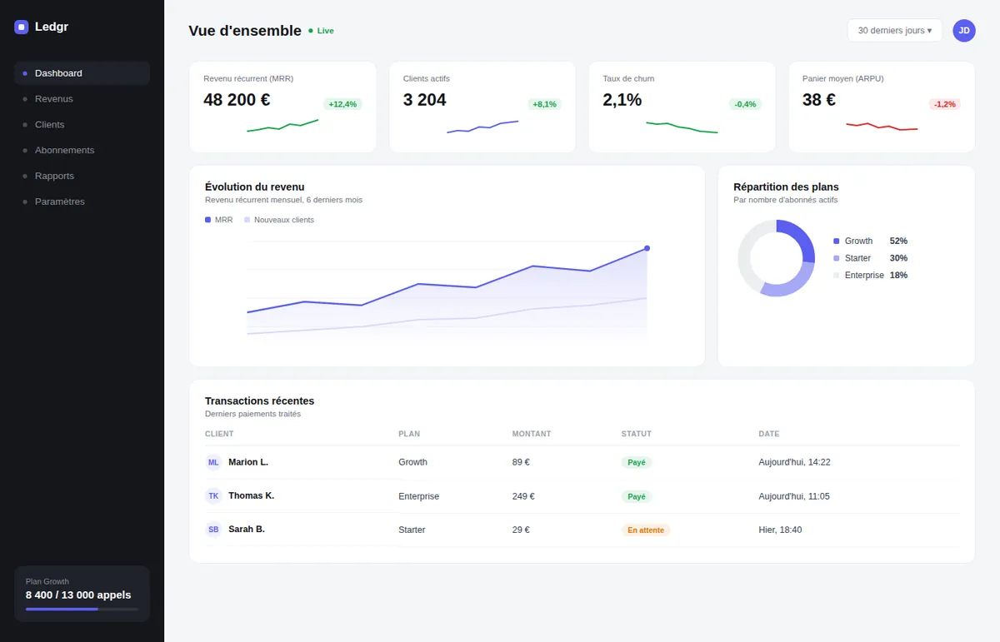

Je crée des expériences digitales uniques qui font grandir votre entreprise et captivent vos clients — du premier pixel à la mise en ligne.
Chaque projet est unique et mérite une solution personnalisée, pensée pour votre activité.
Réactivité et transparence totale à chaque étape du projet, sans jargon inutile.
Vitesse de chargement, SEO et Core Web Vitals optimisés pour des résultats concrets.
De la stratégie à la mise en ligne, je reste à vos côtés bien après la livraison.
Des projets pensés pour convertir et marquer les esprits.



Tout ce dont vous avez besoin pour exister et convertir en ligne.
Développement de sites élégants et optimisés pour présenter votre activité et capturer l'attention de vos futurs clients dès les premières secondes.
Modernisation complète de votre image de marque et mise à jour technologique pour transformer un site vieillissant en un outil de vente puissant.
Conception d'interfaces intuitives centrées sur l'utilisateur, alliant esthétique minimaliste et ergonomie pour une expérience mémorable.
Optimisation technique pour garantir des temps de chargement ultra-rapides et un référencement naturel qui vous propulse en tête des recherches.
Un process rodé, transparent et orienté résultats.
J'analyse vos besoins, votre cible et vos concurrents pour poser des bases solides avant de toucher au design.
Je crée des maquettes sur-mesure pour valider l'identité visuelle et l'expérience utilisateur ensemble.
J'intègre le design en code propre et optimisé — SEO, vitesse et accessibilité inclus d'emblée.
Mise en ligne, formation à l'outil et accompagnement pour faire vivre et évoluer votre projet.
Ce que disent mes clients après livraison.
"Résultat bien au-delà de mes attentes. Le site est moderne, rapide, et mes clients me font régulièrement des compliments dessus. Collaboration fluide du début à la fin."
"Refonte complète réalisée en 3 semaines chrono. Communication impeccable, délais respectés, et le nouveau site a déjà boosté notre taux de conversion de 40%."
"Je cherchais quelqu'un qui comprenne vraiment mes besoins sans que j'aie à tout expliquer. Mission accomplie — le design reflète exactement mon univers de marque."
Parlons-en — premier échange gratuit et sans engagement.
DÉMARRER MAINTENANT →